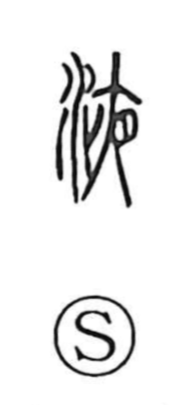

液

Kun: | On: eki
liquid ・ fluid ・ sap ・ solution ・ to dissolve
Explanation
A phono-semantic character: the water radical signals the semantic field of liquids, while 夜 serves as the phonetic, the same element that gives the on-reading in companions like 掖 and 腋 (both read eki). Its core sense is of moisture that seeps out from within—tree sap is a prime image—so it is used for juice or sap in general. By extension it also describes the process of becoming water-like, hence to melt or dissolve.